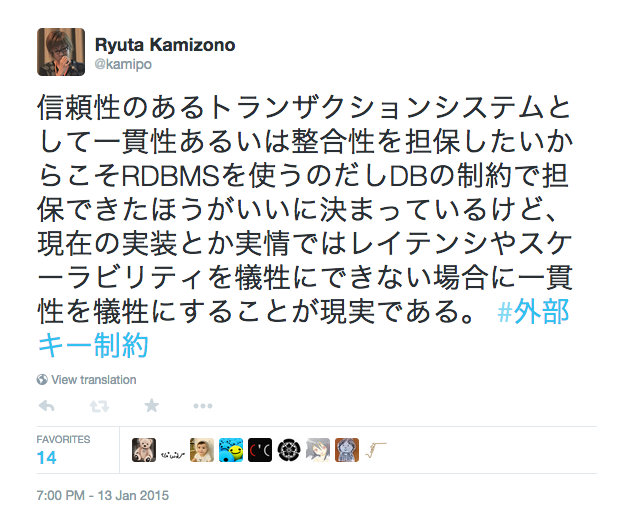
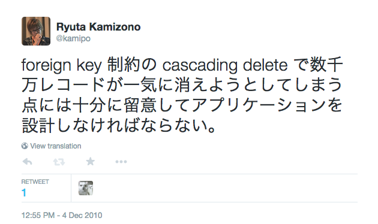

Your browser doesn't support the features required by impress.js, so you are presented with a simplified version of this presentation.
For the best experience please use the latest Chrome or Safari browser. Firefox 10 (to be released soon) will also handle it.
我々は何故RDBMSを使うのか
- 信頼性のあるトランザクションシステムとして一貫性あるいは整合性を担保したい
信頼性のあるトランザクションシステムの持つべき性質
- ACID
- Atomicity(原子性)
- Consistency(一貫性)
- Isolation(独立性)
- Durability(永続性)
信頼性のある(以下略)を担保するためのRDBMSの機能
- トランザクション
- 制約(Constraint)
- NOT NULL 制約
- UNIQUE 制約
- PRIMARY KEY 制約
- FOREIGN KEY 制約
- CHECK 制約
制約(Constraint)
- データの不整合を防いで一貫性を担保する機能
- NOT NULL 制約
- UNIQUE 制約
- PRIMARY KEY 制約
- FOREIGN KEY 制約
- CHECK 制約
よく使う制約
- 制約の検査における影響範囲が限定的
- NOT NULL 制約
- UNIQUE 制約
- PRIMARY KEY 制約
FOREIGN KEY 制約
- 参照整合性(referential integrity)を担保するための機能
- 参照関係(親子関係)のあるデータの一貫性を担保する
- has_many / has_one / belongs_to
ON [ DELETE | UPDATE ]
- 親が更新(削除)されるときの挙動
- RESTRICT
- CASCADE
- SET NULL
- NO ACTION
MySQLとFOREIGN KEY
- その昔MySQLのデフォルトのストレージエンジンはMyISAMだった
- トランザクション非対応
- FOREIGN KEY使えない
- クラッシュセーフではない
- ACIDとはRDBMSとは何だったのか...
- 良くも悪くもMyISAMは20世紀のMongoDBだった
外部キー制約張るとデータ入れるのがめんどい(FAQ)
- たしかにMySQLはめんどい部分はある
- MySQLは即時制約チェックしか対応してない
- ステートメント毎に制約チェック
- MySQLではRESTRICTとNO ACTIONは同じ動作になる
- 他のRDBMSは遅延制約チェックにすることができる
制約は(一時的に)無効にできる
# mysqldump
SET @OLD_UNIQUE_CHECKS=@@UNIQUE_CHECKS,
UNIQUE_CHECKS=0;
SET @OLD_FOREIGN_KEY_CHECKS=@@FOREIGN_KEY_CHECKS,
FOREIGN_KEY_CHECKS=0;
SET @OLD_SQL_MODE=@@SQL_MODE,
SQL_MODE='NO_AUTO_VALUE_ON_ZERO';
制約は(一時的に)無効にできる
mysqldumpの出力するSQLでも使われている
- データのリストアやfixtureのロード等データの整合性をチェックしなくても一貫性が保証できる場合に制約を無効にするのは有り
システム構成や要件によって制約を使えない場合がある

システム構成や要件によって制約を使えない場合がある

システム構成や要件によって制約を使えない場合がある
- 現在のRDBMSの実装上の制限による問題
- システム構成や要件による制限
将来的には技術的に解決されてほしい
@kamipo said:
現状の cascading delete がWeb屋さんの実用上問題なのは一気に大量の行が消えるってなったときに他のトランザクションが長時間待たされるからだから、この外部キーの参照先が消えたってのをキューイングしといて参照整合性だけ保って裏でゆっくり消える機能があればいいと思う。
将来的には技術的に解決されてほしい
@kamipo said:
ポスグレにはインデックス作成で書き込みをブロックしないCONCURRENTLYオプションとかもあるのだから、大量の行に触るオペレーションには実用上問題があるケースがあることはわかってるってことだし参照整合性を保ってゆっくり消すのをユーザーが実装するのは無駄な労力だと思われる。
将来的には技術的に解決されてほしい
@kamipo said:
SELECT COUNT(*) 貯金とか ORDER BY RAND 貯金とか ON DELETE CASCADE 貯金とかして毎月会社で飲み会したい
制約を使える場合でも万能ではない
- 要件に合わない使い方をすれば当然問題になる
- 特にON DELETE CASCADEが問題になる場合が多い
ON DELETE CASCADEがヤバいシステムをどうするか
- 親データの削除で大量の子データも同時に削除される
- 大量の行が削除される巨大トランザクションで他のトランザクションが待たされる
- MySQLのレプリケーションのようにslaveがシングルスレッドで更新していると巨大トランザクションでslaveが遅延していく
- 設計をなおすまでは運用でカバーするしかない
ON DELETE CASCADEがヤバいシステムをどうするか
- 仕様を変更できるなら
- ユーザーさんは自分の投稿したデータを自分で削除してから退会できます
- 殿堂入りユーザーさんは退会できません
- ユーザーは論理削除して投稿データは削除済みで表示する
レビュー重要
- 要件に合わない使い方をすればどんな機能でも問題になりうる
- 設計の正解は難しい
我々は何故RDBMSを使うのか
- 信頼性のあるトランザクションシステムとして一貫性あるいは整合性を担保したい
- システム構成や要件によって制約を使えない場合がある
- その場合アプリケーション側で一貫性を担保する必要がある
- (制約を使うにしろ使わないにしろ)要件に合わないと問題になりうる
- (設計ミスを機械的に防げればいいが現状は)レビュー重要
以上